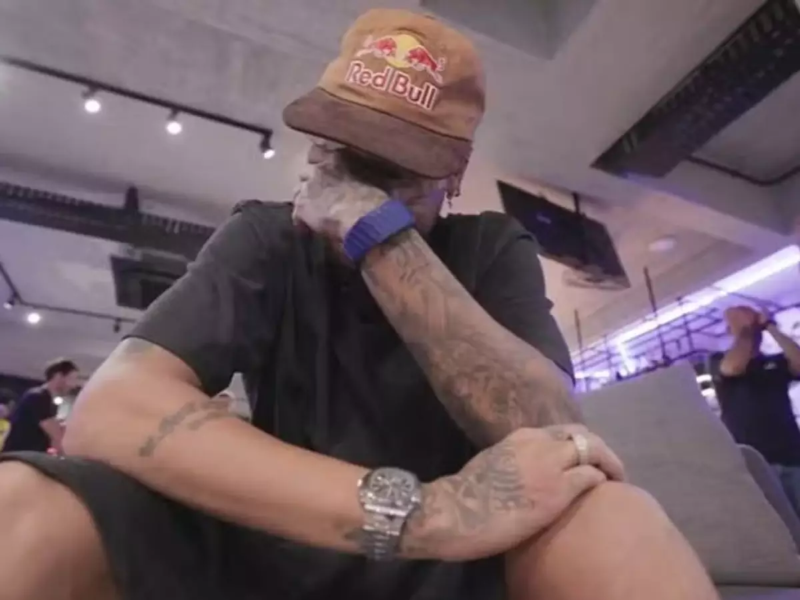
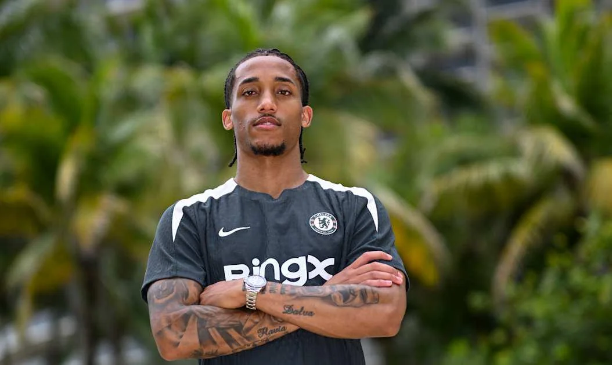

O momento mais aguardado por qualquer torcedor brasileiro chegou. Na manhã desta terça-feira, 19 de maio, o técnico Carlo Ancelotti subiu ao palco
no Museu do Amanhã, no Rio de Janeiro, e anunciou os 26 jogadores que vão defender o hexacampeonato mundial em solo norte-americano . E a notícia
que dominou todas as manchetes veio na posição que o Brasil mais venera: Neymar está convocado.
Escrito por luiz guilherme em 15-05-2026 ás 14:35
Quando Ancelotti começou a ler os nomes do ataque, a tensão era palpável. Vini Jr., Raphinha,
Martinelli... e então veio "Neymar Jr, do Santos" . O anúncio provocou uma comoção que transcendeu o evento.
Em um vídeo que rapidamente viralizou, Neymar aparece em casa, ao lado da filha e de amigos, segurando o celular.
Quando ouve seu nome, o atacante de 34 anos desaba em lágrimas, abraçado por seus familiares
. Nas redes sociais, ele escreveu: "Um dos dias mais emocionais e felizes da minha vida. Obrigado, Brasil"
A última vez que Neymar vestiu a amarelinha foi em outubro de 2023, quando sofreu uma grave lesão no joelho esquerdo contra o Uruguai
. Foram 944 dias de espera, cirurgias, idas e vindas . Muitos duvidavam.
Até mesmo Ancelotti, que havia deixado o jogador de fora dos amistosos de março, pedia cautela .
Mas a recuperação no Santos — onde ele já atuou 43 vezes em 2026 — convenceu o italiano.
"Nós o avaliamos o ano todo. Ele melhorou sua forma física e tem a experiência que faz falta nesse tipo de competição",
justificou Ancelotti em entrevista coletiva . O técnico, que acabou
de renovar seu contrato até 2030, foi direto: "Ele não está aqui para ser reserva. Está para somar" .
Essa será a quarta Copa de Neymar. Ele ainda é o maior artilheiro da história da Seleção, com: 79 gols

Em video craque é visto emocionado após sua convocação
Ancelotti optou por um elenco que mistura juventude e experiência. O ataque, como era de se esperar, é o setor mais estrelado. Confira os convocados
Se a volta de Neymar trouxe festa, a ausência de alguns nomes gerou polêmica. A principal delas é o atacante
João Pedro, do Chelsea. O jogador de 24 anos viveu a melhor temporada da carreira, com 23 gols e uma regularidade impressionante no clube londrino
Muitos analistas apontam que ele foi "vítima" da aposta de Ancelotti em jogadores
de características mais verticalizadas ou na experiência de nomes como Neymar . Joáo Pedro, mesmo com a decepção,
se manifestou: "Tentei dar o meu melhor. Infelizmente não foi possível realizar esse sonho. Agora serei apenas mais um torcedor torcendo pelo hexa"
Além dele, nomes como Rodrygo (Real Madrid) e a joia Estevão (Chelsea) ficaram de fora por lesão, algo que atrapalhou os planos do técnico nos últimos meses

Jogador joão pedro artilheiro do chelsea na temporada e que não foi convocado
A estreia será contra Marrocos, no dia 13 de junho, em Nova Jersey . A expectativa é que Ancelotti escale um time ofensivo,
mas com o "pé no chão" que lhe é característico. Aos 34 anos e vindo de lesões, dificilmente Neymar
jogará os 90 minutos de todas as partidas — mas sua liderança dentro e fora de campo é apontada por Ancelotti como essencial para "criar o ambiente certo" no grupo .
A missão é clara: acabar com o jejum de 24 anos sem um título mundial . A capa da CBF nas redes sociais foi resumida em poucas palavras: "Vamos em busca da sexta estrela" .